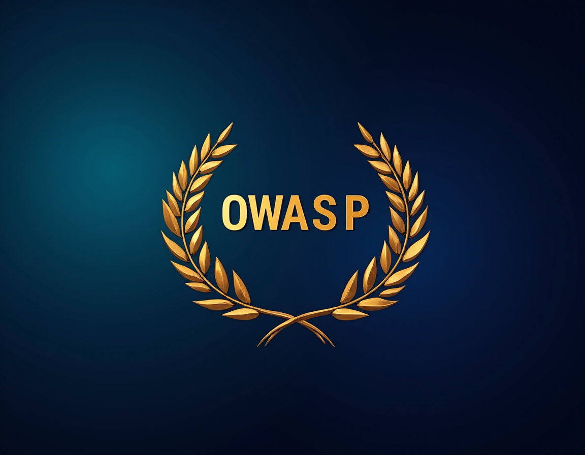

Additional Resources
Can you guess which image is AI-generated? Take a moment to study both images, then click the button below to reveal the sources.

Regulations and Guidelines:
- General Data Protection Regulation (GDPR)
- California Consumer Privacy Act (CCPA)
- Health Insurance Portability and Accountability Act (HIPAA)
Organizations and Projects:
- OWASP Top Ten Project
- International Association of Privacy Professionals (IAPP)
- Privacy International
Books:
- "Privacy by Design: The Definitive Guide" by Ann Cavoukian
- "Data and Goliath: The Hidden Battles to Collect Your Data and Control Your World" by Bruce Schneier
- "The Ethics of Cybersecurity" edited by Markus Christen, Bert Gordijn, and Michele Loi
Online Courses:
- Cryptography I - Stanford University on Coursera
- Cybersecurity Fundamentals - RITx on edX